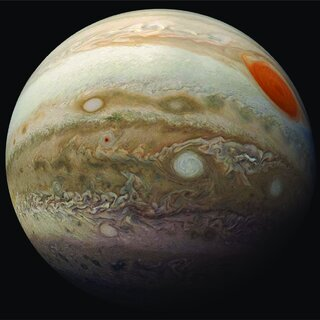
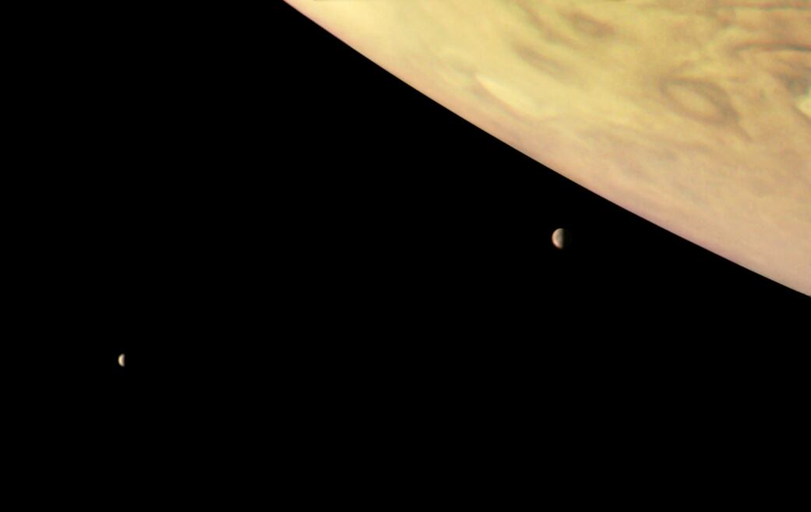

Júpiter: O Gigante Gasoso do Sistema Solar
Introdução
Júpiter, o maior planeta do nosso Sistema Solar, é uma imponente esfera gasosaque intriga e fascina astrônomos e entusiastas do espaço há séculos. Com suamassa colossal e aparência majestosa, Júpiter desempenha um papel fundamentalna dinâmica do nosso sistema planetário Neste artigo, mergulharemos nascaracterísticas e curiosidades desse gigante gasoso.
Características Físicas
Júpiter é um planeta gasoso, constituído principalmente de hidrogênio e hélio, com traços de outras substâncias, como metano e amônia. Essa composiçãoo torna distinto dos planetas rochosos, como a Terra. Com um diâmetro deaproximadamente 142.984 km, Júpiter é mais de 11 vezes maior que a Terra epossui uma massa aproximadamente 318 vezes maior que a do nosso planeta.

source: NASA
A Grande Mancha Vermelha
Uma das características mais marcantes de Júpiter é a Grande Mancha Vermelha, uma gigantesca tempestade que ocorre na sua atmosfera há séculos. A Grande Mancha Vermelha é um fenômeno persistente e tem sido observada desde o século XVII. Essa tempestade é tão grande que poderia engolir três Terras. Apesar de sua longevidade, a causa exata de sua formação ainda é objeto de estudo e pesquisa.
Sistema de Anéis
Júpiter também possui um sistema de anéis, embora menos proeminente do que os anéis de Saturno. Esses anéis são compostos principalmente de partículas de poeira e pequenos fragmentos rochosos, e sua estrutura pode ser um resultado da colisão de cometas e asteroides com as luas de Júpiter.
Luas de Júpiter
Além dos anéis, Júpiter é cercado por um vasto conjunto deluas. Atualmente, mais de 80 luas foram identificadas ao redor do planeta gigante. Quatro das luas de Júpiter, conhecidas como as "luas galileanas" (Io, Europa, Ganimedes e Calisto), foram descobertas por Galileu Galilei em 1610. Essas luas são de grande interesse científico, pois podem abrigar oceanos subterrâneos e potencialmente condições propícias para a existência de vida.

Image source: NASA
Exploração Espacial
Júpiter tem sido objeto de estudo e exploração pelas agências espaciais há várias décadas. A sonda espacial Voyager 1 fez uma passagem próxima por Júpiter em 1979, fornecendo as primeiras imagens detalhadas do planeta e suas luas. Mais tarde, as missões Galileo, Juno e outras trouxeram dados cruciais sobre a estrutura interna de Júpiter, seu campo magnético e suas tempestades.
Conclusão
Júpiter é verdadeiramente um colosso celestial que continua aintrigar os cientistas e entusiastas do espaço. Sua massa, tamanho e complexidadeatmosférica o tornam um laboratório natural para entender a formação e aevolução de planetas gasosos. Além disso, suas luas e tempestades proporcionamuma visão fascinante da dinâmica planetária e do potencial de mundosalienígenas. À medida que a exploração espacial continua avançando, é provávelque Júpiter ainda reserve muitas surpresas e segredos a serem revelados.